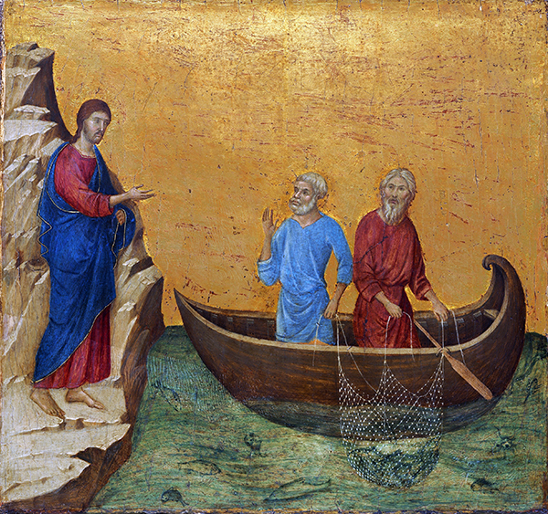

The Ministry Begins

As we hear in the Gospel by Matthew, Jesus begins is ministry by calling two brothers, Peter and Andrew, “Come after me and I will make you fishers of men” (Mt 4:19) while he was walking by the Sea of Galilee. He then calls two other brothers, James and John. All left their boats and followed him. With these first disciples, Jesus begins his ministry and he will start preaching his message of redemption and the kingdom of God.
Today, Jesus continues to call on us to be his disciples. Let’s always follow him into the heavenly kingdom, walking in his light.